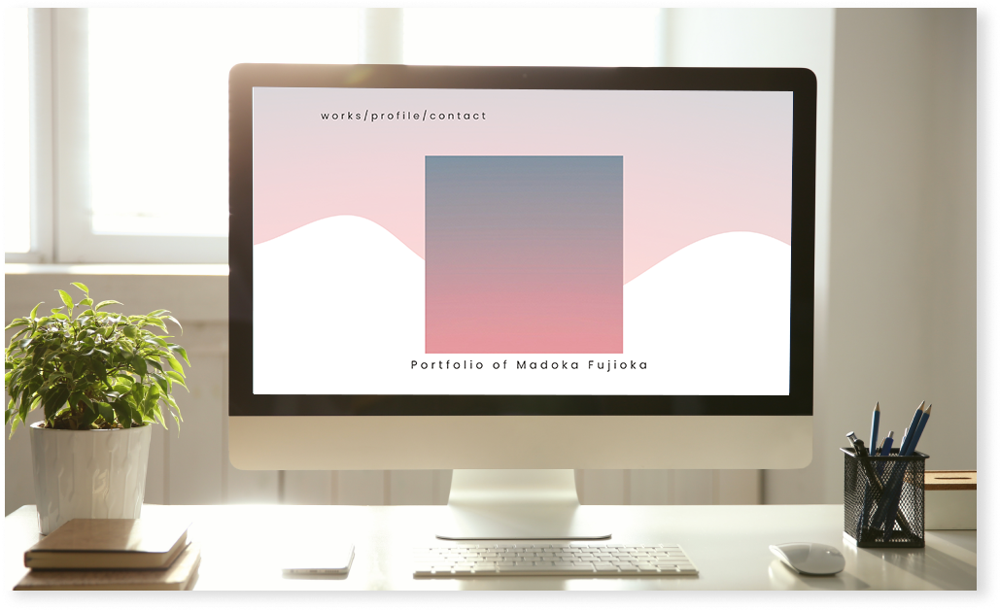

Portfolio of Madoka Fujioka
works

ポートフォリオ
direction / design / codingこのポートフォリオサイトは、私のデザインとコーディングのスキルを示すために作成されました。
シンプルでありながら、視覚的に魅力的なデザインを目指しました。
ポートフォリオ
direction / design / codingこのポートフォリオサイトは、私のデザインとコーディングのスキルを示すために作成されました。
シンプルでありながら、視覚的に魅力的なデザインを目指しました。
ポートフォリオ
direction / design / codingこのポートフォリオサイトは、私のデザインとコーディングのスキルを示すために作成されました。
シンプルでありながら、視覚的に魅力的なデザインを目指しました。
profile
Madoka Fujioka
藤岡 円香
幼少期より、絵を描くことや粘土遊びなどの創作活動が得意でした。
アパレル販売や事務職を経験する中で、「伝わる見せ方」や「ITによる業務効率化」に興味を持ち、ものづくりへの関心が再燃。
現在はWeb制作スクールで6ヶ月間学び、Webデザイナーへの転職を目指しています。
contact
ご覧いただきありがとうございます
下記のメールアドレスにお気軽にご連絡ください